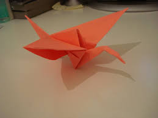

ORIGAMI DESIGNS
crane origami

intresting facts about a crane
Cranes are tall birds with long legs, necks and usually long bills. They resemble herons and egrets in body shape,
but tend to have heavier bodies. Cranes are generally brown, gray, or white in color,
although African crowned cranes (Balearica pavonina) feature a striking gold crown of feathers on their heads.
lion origami
intresting facts about a lion
Lions are unique among cats in that they live in a group, or pride.
The members of a pride typically spend the day in several scattered groups that may unite to hunt or share a meal.
Lions proclaim their territory by roaring and by scent marking.